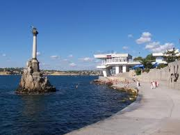

Меня зовут Кошовкин Алексей Игоревич.
Я родился 18 декабря 1992 года в городе-герое Севастополе.
Учился в школе №29, в которой успешно закончил 10 классов.
На данный момент я являюсь студентом Севастопольского Национального Технического Университета (СевНТУ) направления компьютерные науки факультета автоматики и вычислительной техники.